TRƯỜNG ĐẠI HỌC TRÀ VINH
KHOA KỸ THUẬT VÀ CÔNG NGHỆ
ĐỒ ÁN THỰC TẬP CHUYÊN NGÀNH
WEBSITE QUẢN LÝ VÀ CHIA SẺ
CÔNG THỨC NẤU ĂN
Giảng viên hướng dẫn: ThS. Trầm Hoàng Nam
Sinh viên thực hiện: Phạm Tuấn Anh
Mã số sinh viên: 170123497
Lớp: DX23TT11
Khóa: 2023-2027
Trà Vinh, tháng 10 năm 2026
TRƯỜNG ĐẠI HỌC TRÀ VINH
KHOA KỸ THUẬT VÀ CÔNG NGHỆ
ĐỒ ÁN THỰC TẬP CHUYÊN NGÀNH
WEBSITE QUẢN LÝ VÀ CHIA SẺ
CÔNG THỨC NẤU ĂN
Giảng viên hướng dẫn: ThS. Trầm Hoàng Nam
Sinh viên thực hiện: Phạm Tuấn Anh
Mã số sinh viên: 170123497
Lớp: DX23TT11
Khóa: 2023-2027
Trà Vinh, tháng 10 năm 2026
NHẬN XÉT CỦA GIÁO VIÊN HƯỚNG DẪN
Trà Vinh, ngày …. tháng …. năm 2026
Giảng viên hướng dẫn
(ký và ghi rõ họ tên)
NHẬN XÉT CỦA THÀNH VIÊN HỘI ĐỒNG
Trà Vinh, ngày …. tháng …. năm 2026
Thành viên hội đồng
(ký và ghi rõ họ tên)
Đề tài "Website quản lý và chia sẻ công thức nấu ăn" hướng đến việc xây dựng một ứng dụng web giúp người dùng dễ dàng tìm kiếm, lưu trữ và chia sẻ công thức nấu ăn theo nhóm món. Hệ thống cho phép xem công thức theo danh mục, tìm kiếm theo tên, nguyên liệu hoặc nhóm món, lưu công thức yêu thích, đánh giá sao, đồng thời cung cấp trang quản trị để quản lý nội dung.
Báo cáo trình bày tổng quan về đề tài và các cơ sở lý thuyết nền tảng gồm: kiến trúc Client-Server và mô hình ba lớp, RESTful API, hệ quản trị cơ sở dữ liệu quan hệ PostgreSQL, kỹ thuật ORM, xác thực và phân quyền người dùng (Khách, Thành viên, Quản trị viên) và thiết kế giao diện đáp ứng (Responsive Web Design). Đồ án được hiện thực theo hướng full-stack JavaScript trên nền tảng Next.js (App Router) kết hợp Supabase – dịch vụ mã nguồn mở xây trên PostgreSQL, cung cấp sẵn xác thực người dùng (Auth), kiểm soát truy cập dữ liệu theo dòng (Row Level Security) và lưu trữ tệp (Storage). Giao diện được xây dựng bằng Tailwind CSS và thư viện thành phần shadcn/ui, kèm bộ dữ liệu mẫu hơn 30 công thức Việt Nam có ảnh minh họa; sản phẩm được triển khai trên nền tảng Vercel.
Mục lục
NHẬN XÉT CỦA GIÁO VIÊN HƯỚNG DẪN i
NHẬN XÉT CỦA THÀNH VIÊN HỘI ĐỒNG ii
KÍ HIỆU CÁC CỤM TỪ VIẾT TẮT xviii
CHƯƠNG 1: TỔNG QUAN VỀ ĐỀ TÀI 1
1.2 Thông tin chung của đề tài 1
CHƯƠNG 2: NGHIÊN CỨU LÝ THUYẾT 2
2.1 Kiến trúc web application và mô hình Client-Server 2
2.3 Hệ quản trị cơ sở dữ liệu quan hệ (RDBMS) 2
2.4 ORM (Object-Relational Mapping) 2
2.5 Xác thực và phân quyền (Authentication & Authorization) 3
2.7 Chọn lọc các lý thuyết phục vụ tốt cho đề tài 3
CHƯƠNG 3: HIỆN THỰC HÓA NGHIÊN CỨU 5
3.1 Quy trình thực hiện đề tài 5
3.2 Phân tích và thiết kế hệ thống 5
3.2.2 Sơ đồ use case tổng quát 6
3.3.1 Sơ đồ thực thể – quan hệ (ERD) 8
3.3.3 Bảo mật dữ liệu với Row Level Security 10
3.4 Thiết kế kiến trúc hệ thống 11
3.5.1 Môi trường và công cụ 12
3.5.3 Hiện thực hóa các chức năng tiêu biểu 13
CHƯƠNG 4: KẾT QUẢ NGHIÊN CỨU 15
4.2 Mức độ hoàn thành chức năng 15
4.3 Giao diện các trang chức năng 16
4.3.3 Trang chi tiết công thức 18
4.3.5 Trang yêu thích và đánh giá 20
4.3.6 Trang đăng nhập / đăng ký 21
CHƯƠNG 5: KẾT LUẬN VÀ HƯỚNG PHÁT TRIỂN 25
DANH MỤC TÀI LIỆU THAM KHẢO 25
Hướng dẫn cài đặt và chạy chương trình 27
Trong thời đại công nghệ số, Internet đã trở thành nguồn tham khảo quen thuộc khi mọi người muốn tìm hiểu cách chế biến một món ăn. Nhu cầu tìm kiếm, lưu trữ và chia sẻ công thức nấu ăn ngày càng tăng, tuy nhiên thông tin hiện nay thường phân tán trên nhiều trang web, mạng xã hội và diễn đàn, thiếu sự tổng hợp và phân loại khoa học, gây khó khăn cho người dùng khi cần tìm một món ăn phù hợp với nguyên liệu và sở thích của mình.
Xuất phát từ nhu cầu thực tiễn đó, em chọn thực hiện đề tài “Website quản lý và chia sẻ công thức nấu ăn” nhằm xây dựng một ứng dụng web full-stack trên nền tảng Next.js và Supabase (PostgreSQL, Auth, Storage), triển khai trên Vercel. Báo cáo gồm năm chương: Chương 1 trình bày tổng quan về đề tài; Chương 2 trình bày các lý thuyết liên quan và chọn lọc lý thuyết phục vụ đề tài; Chương 3 mô tả hiện thực hóa nghiên cứu — quy trình thực hiện, phân tích thiết kế (sơ đồ use case, luồng tuần tự, cơ sở dữ liệu, kiến trúc) và cài đặt chương trình; Chương 4 trình bày kết quả đạt được qua các giao diện chức năng; Chương 5 kết luận và hướng phát triển.
Mặc dù đã rất nỗ lực hoàn thiện đồ án, báo cáo chắc chắn không thể tránh khỏi những thiếu sót nhất định. Em rất mong nhận được những ý kiến đóng góp quý báu từ Quý Thầy Cô để nghiên cứu được hoàn thiện hơn nữa.
Để hoàn thành báo cáo đồ án "Website quản lý và chia sẻ công thức nấu ăn", bên cạnh sự nỗ lực của bản thân, em đã nhận được rất nhiều sự giúp đỡ, chỉ bảo và động viên từ Quý Thầy Cô, gia đình và bạn bè.
Trước hết, em xin được bày tỏ lòng biết ơn sâu sắc nhất đến Thầy ThS. Trầm Hoàng Nam, người đã tận tình hướng dẫn, chỉ dạy và định hướng cho em trong suốt quá trình thực hiện đề tài. Những góp ý chuyên môn và sự động viên kịp thời của Thầy chính là nguồn động lực lớn lao giúp em vượt qua những khó khăn và hoàn thành tốt báo cáo này.
Em cũng xin chân thành cảm ơn Quý Thầy Cô trong Khoa Kỹ thuật và Công nghệ, Trường Đại học Trà Vinh đã truyền đạt cho em những kiến thức quý báu trong suốt thời gian học tập vừa qua. Đó là nền tảng vững chắc để em có thể thực hiện và hoàn thành tốt nhiệm vụ nghiên cứu của mình.
Cuối cùng, em xin cảm ơn gia đình và bạn bè đã luôn ủng hộ, động viên và tạo điều kiện thuận lợi để em hoàn thành đồ án. Do kiến thức và thời gian còn hạn chế, báo cáo khó tránh khỏi thiếu sót, em rất mong nhận được sự góp ý của Quý Thầy Cô để đề tài được hoàn thiện hơn.
Trà Vinh, ngày … tháng 10 năm 2026
Sinh viên thực hiện
Phạm Tuấn Anh
NHẬN XÉT
(Của cơ quan thực tập, nếu có)
NHẬN XÉT
(Của giảng viên hướng dẫn trong đồ án của sinh viên)
Giảng viên hướng dẫn
(ký và ghi rõ họ tên)
UBND TỈNH TRÀ VINH CỘNG HOÀ XÃ HỘI CHỦ NGHĨA VIỆT NAM
TRƯỜNG ĐẠI HỌC TRÀ VINH Độc lập – Tự do – Hạnh phúc
BẢN NHẬN XÉT ĐỒ ÁN THỰC TẬP CHUYÊN NGÀNH
(Của giảng viên hướng dẫn)
Họ và tên sinh viên: MSSV:
Ngành: Khóa:
Tên đồ án:
Họ và tên Giáo viên hướng dẫn:
Chức danh: Học vị:
NHẬN XÉT
7. Đề nghị sửa chữa bổ sung:
8. Đánh giá:
Trà Vinh, ngày tháng năm 20…
Giảng viên hướng dẫn
(Ký & ghi rõ họ tên)
NHẬN XÉT
(Của giảng viên chấm trong đồ án của sinh viên)
Giảng viên chấm
(ký và ghi rõ họ tên)
UBND TỈNH TRÀ VINH CỘNG HOÀ XÃ HỘI CHỦ NGHĨA VIỆT NAM
TRƯỜNG ĐẠI HỌC TRÀ VINH Độc lập - Tự do - Hạnh phúc
BẢN NHẬN XÉT ĐỒ ÁN THỰC TẬP CHUYÊN NGÀNH
(Của cán bộ chấm đồ án)
Họ và tên người nhận xét:
Chức danh: Học vị:
Chuyên ngành:
Cơ quan công tác:
Tên sinh viên:
Tên đề tài đồ án:
I. Ý KIẾN NHẬN XÉT
1. Nội dung:
2. Điểm mới các kết quả của đồ án:
3. Ứng dụng thực tế:
II. CÁC VẤN ĐỀ CẦN LÀM RÕ
(Các câu hỏi của giáo viên phản biện)
III. KẾT LUẬN
(Ghi rõ đồng ý hay không đồng ý cho bảo vệ đồ án)
……………, ngày …… tháng …… năm 20…
Người nhận xét
(Ký & ghi rõ họ tên)
Bảng 1.1 Thông tin chung của đề tài 1
Bảng 2.1 Các lý thuyết được chọn lọc áp dụng vào đề tài 4
Bảng 3.1 Danh mục chức năng của hệ thống 5
Bảng 3.2 Mô tả các bảng của cơ sở dữ liệu 9
Bảng 3.3 Một số chính sách Row Level Security tiêu biểu 10
Bảng 3.4 Môi trường và công cụ sử dụng 12
Bảng 4.1 Mức độ hoàn thành chức năng 15
Hình 3.1 Sơ đồ use case tổng quát của hệ thống 7
Hình 3.2 Sơ đồ tuần tự chức năng đăng nhập 7
Hình 3.3 Sơ đồ tuần tự chức năng tìm kiếm 8
Hình 3.4 Sơ đồ tuần tự chức năng đánh giá công thức 8
Hình 3.5 Sơ đồ thực thể – quan hệ (ERD) của cơ sở dữ liệu 9
Hình 3.6 Sơ đồ khối kiến trúc hệ thống 12
Hình 4.1 Giao diện trang chủ (desktop và mobile 375px) 17
Hình 4.2 Giao diện trang danh mục 18
Hình 4.3 Giao diện trang chi tiết công thức 19
Hình 4.4 Giao diện trang tìm kiếm 20
Hình 4.5 Giao diện trang yêu thích và đánh giá sao 21
Hình 4.6 Giao diện đăng nhập và đăng ký 22
Hình 4.7 Giao diện trang quản trị 23
Viết tắt | Cụm từ đầy đủ |
API | Application Programming Interface (Giao diện lập trình ứng dụng) |
CRUD | Create, Read, Update, Delete (Tạo, đọc, cập nhật, xóa) |
CSDL | Cơ sở dữ liệu |
ERD | Entity-Relationship Diagram (Sơ đồ thực thể – quan hệ) |
FR | Functional Requirement (Yêu cầu chức năng) |
HTTP | HyperText Transfer Protocol (Giao thức truyền tải siêu văn bản) |
JSON | JavaScript Object Notation |
NFR | Non-Functional Requirement (Yêu cầu phi chức năng) |
ORM | Object-Relational Mapping (Ánh xạ đối tượng – quan hệ) |
RLS | Row Level Security (Bảo mật dữ liệu cấp dòng) |
RWD | Responsive Web Design (Thiết kế web đáp ứng) |
SEO | Search Engine Optimization (Tối ưu hóa công cụ tìm kiếm) |
SQL | Structured Query Language (Ngôn ngữ truy vấn có cấu trúc) |
SSR | Server-Side Rendering (Render phía máy chủ) |
UI | User Interface (Giao diện người dùng) |
URL | Uniform Resource Locator (Định vị tài nguyên thống nhất) |
UX | User Experience (Trải nghiệm người dùng) |
Trong thời đại công nghệ số, nhu cầu tìm kiếm và chia sẻ công thức nấu ăn ngày càng tăng. Người dùng thường tham khảo từ nhiều nguồn khác nhau trên Internet, tuy nhiên thông tin thường phân tán, thiếu sự tổng hợp và phân loại khoa học. Việc xây dựng một website chuyên biệt giúp người dùng dễ dàng tìm kiếm, lưu trữ và tổ chức công thức theo nhóm món ăn.
Đề tài "Website quản lý và chia sẻ công thức nấu ăn" hướng đến việc xây dựng một ứng dụng web hoàn chỉnh, phục vụ cho nhu cầu tìm hiểu và chia sẻ các công thức nấu ăn trong cộng đồng. Sản phẩm cho phép người dùng xem công thức theo nhóm món, tìm kiếm theo tên/nguyên liệu/nhóm, lưu yêu thích, đánh giá sao, đồng thời cung cấp trang quản trị cho quản lý nội dung.
Đồ án thuộc học phần Thực tập đồ án cơ sở ngành (220265, 3 tín chỉ), giúp sinh viên vận dụng kiến thức chuyên ngành vào một sản phẩm phần mềm thực tế, bước đầu hình thành năng lực nghiên cứu và phát triển ứng dụng web.
Thông tin tổng quát của đề tài được trình bày trong Bảng 1.1.
Bảng . Thông tin chung của đề tài
Hạng mục | Nội dung |
|---|---|
Tên đề tài | Website quản lý và chia sẻ công thức nấu ăn |
Học phần | Thực tập đồ án cơ sở ngành (220265) |
Tín chỉ | 3 |
Thời gian thực hiện | 06/09/2026 – 25/10/2026 (7 tuần) |
Công nghệ chính | Next.js 16 (App Router) + TypeScript + Supabase (PostgreSQL, Auth, Storage) + Tailwind CSS v4 + shadcn/ui + Vercel |
Kho mã nguồn (GitHub) | https://github.com/anhpt220203-web/csn-dx23tt11-phamtuananh-recipe-sharing |
Bản demo (Production) | https://congthucmonngon.vercel.app |
Một ứng dụng web hiện đại thường hoạt động theo mô hình client-server: trình duyệt (client) gửi yêu cầu HTTP đến server, server xử lý logic nghiệp vụ, truy vấn cơ sở dữ liệu và trả về kết quả (HTML, JSON). Kiến trúc ba lớp (3-tier) chia hệ thống thành Presentation Layer (giao diện), Application Layer (xử lý logic) và Data Layer (lưu trữ). Với sự phát triển của JavaScript, hiện nay nhiều framework cho phép phát triển cả frontend và backend trong cùng một codebase (full-stack JavaScript), giúp giảm độ phức tạp và tăng tốc độ phát triển.
REST (Representational State Transfer) là phong cách kiến trúc cho các web service, sử dụng giao thức HTTP với các phương thức GET, POST, PUT, DELETE để thực hiện CRUD trên tài nguyên. Mỗi tài nguyên được định danh bằng URI (Uniform Resource Identifier). RESTful API trả về dữ liệu dạng JSON, dễ tích hợp với nhiều loại client khác nhau (web, mobile, third-party). Trong đề tài này, dữ liệu được truy cập qua giao diện RESTful do PostgREST của Supabase tự động cung cấp, kết hợp Server Actions của Next.js cho các thao tác ghi; cách tiếp cận này giúp có thể dùng lại cùng cơ sở dữ liệu cho mobile app trong tương lai.
Cơ sở dữ liệu quan hệ tổ chức dữ liệu thành các bảng (table) có mối quan hệ rõ ràng thông qua khóa chính (primary key) và khóa ngoại (foreign key). Mỗi bảng biểu diễn một thực thể, mỗi hàng là một bản ghi, mỗi trường là một thuộc tính. Việc thiết kế cơ sở dữ liệu tuân thủ nguyên tắc chuẩn hóa (normalization) giúp giảm thiểu redundancy và đảm bảo tính toàn vẹn dữ liệu. PostgreSQL là một RDBMS mã nguồn mở phổ biến, hỗ trợ đầy đủ các tính năng của SQL chuẩn, indexing, transaction, và nhiều kiểu dữ liệu nâng cao.
ORM (Object-Relational Mapping) là kỹ thuật ánh xạ giữa các đối tượng trong ngôn ngữ lập trình và các bảng trong cơ sở dữ liệu quan hệ. ORM cho phép lập trình viên thao tác với dữ liệu bằng đối tượng thay vì viết SQL trực tiếp, giúp mã nguồn dễ đọc, dễ bảo trì và giảm nguy cơ lỗi SQL Injection nhờ tham số hóa truy vấn. Prisma là một ORM phổ biến trong hệ sinh thái Node.js/TypeScript với lược đồ khai báo và migration tự động. Trong đề tài này, thay vì dùng một ORM độc lập, dữ liệu được truy vấn trực tiếp từ Next.js thông qua Supabase Client (xây trên PostgREST): lược đồ được quản lý bằng các tệp migration SQL của Supabase CLI, kiểu dữ liệu của các truy vấn được sinh tự động từ lược đồ cơ sở dữ liệu (Database Types), vừa giữ được sự an toàn kiểu của TypeScript vừa tận dụng các chính sách bảo mật Row Level Security ngay phía máy chủ cơ sở dữ liệu.
Xác thực (Authentication) là quá trình xác nhận danh tính người dùng (đăng nhập), trong khi phân quyền (Authorization) là quá trình kiểm tra quyền truy cập tài nguyên. Các phương pháp phổ biến gồm: xác thực dựa trên phiên (session), dựa trên token (JWT – JSON Web Token) và OAuth 2.0 (đăng nhập qua bên thứ ba). Trong đề tài, xác thực được triển khai bằng dịch vụ Supabase Auth: mật khẩu được băm tự động, phiên đăng nhập duy trì qua cookie an toàn (thư viện @supabase/ssr), hiện hỗ trợ đăng nhập bằng email/mật khẩu (đăng nhập qua nhà cung cấp OAuth 2.0 có thể được bật thêm trong tương lai); phân quyền ba vai trò Khách (Guest), Thành viên (User), Quản trị viên (Admin) được kiểm soát đồng thời ở tầng ứng dụng (middleware, server action) và ở tầng cơ sở dữ liệu bằng chính sách Row Level Security.
Responsive Web Design (RWD) là phương pháp thiết kế giao diện web tự động điều chỉnh layout theo kích thước màn hình, đảm bảo trải nghiệm tốt trên desktop, tablet và mobile. Các nguyên tắc chính bao gồm: fluid grid layout, flexible images, và media queries trong CSS. Hiện nay, mobile-first design (thiết kế từ mobile lên) được ưu tiên vì hơn 60% lượng truy cập web đến từ thiết bị di động. Tailwind CSS hỗ trợ responsive design thông qua các utility class như sm:, md:, lg:.
Từ các lý thuyết đã tìm hiểu ở các mục 2.1 đến 2.6, cần chọn lọc những phần phù hợp và cần thiết nhất để áp dụng vào đề tài (Bảng 2.1):
Bảng . Các lý thuyết được chọn lọc áp dụng vào đề tài
Lý thuyết | Mức độ liên quan | Cách áp dụng vào đề tài |
|---|---|---|
Kiến trúc 3-tier | Cao | Phân lớp Giao diện (App Router) → Dịch vụ (Server Actions) → CSDL trong Next.js full-stack |
RESTful API | Cao | Truy vấn dữ liệu qua Supabase Client (PostgREST) và Server Actions của Next.js |
Cơ sở dữ liệu quan hệ | Cao | Thiết kế 11 bảng (recipes, categories, favorites, ratings, tags, …) với khóa chính/ngoại, chuẩn hóa |
Truy vấn dữ liệu & ORM | Rất cao | Quản lý lược đồ bằng migration SQL; truy vấn an toàn kiểu qua Supabase Client |
Xác thực & phân quyền | Rất cao | Supabase Auth (phiên cookie, hash mật khẩu) + chính sách RLS; ba vai trò Guest/User/Admin |
Responsive Design | Cao | Mobile-first với Tailwind CSS, hiển thị tốt từ 375px |
Các lý thuyết được chọn lọc sẽ được hiện thực hóa trong quá trình xây dựng mô hình, sơ đồ, dữ liệu và xây dựng chương trình của đề tài.
Chương này trình bày quá trình hiện thực hóa nghiên cứu của đề tài: quy trình thực hiện, phân tích và thiết kế hệ thống (danh mục chức năng, sơ đồ use case, sơ đồ luồng tuần tự, thiết kế cơ sở dữ liệu và kiến trúc hệ thống), cùng cách thức cài đặt các chức năng của website “Công Thức Việt”.
Đồ án được thực hiện trong 7 tuần (từ 06/09/2026 đến 25/10/2026) theo quy trình lặp ngắn: mỗi tuần chọn một nhóm chức năng, lần lượt phân tích – thiết kế – cài đặt – kiểm thử, sau đó trình Giảng viên hướng dẫn góp ý và điều chỉnh cho tuần kế tiếp. Toàn bộ mã nguồn và tài liệu được quản lý trên kho mã nguồn GitHub theo quy định của Bộ môn: commit thường xuyên ít nhất một lần mỗi tuần, báo cáo tiến độ hằng tuần được tải lên thư mục progress-report, lịch sử commit đồng thời là căn cứ chấm điểm tiến độ.
Trong quá trình phát triển, yêu cầu hệ thống được đặc tả thành tài liệu đặc tả chức năng (spec), kế hoạch thiết kế (plan) và danh sách công việc (tasks) theo bộ công cụ Spec Kit; mỗi nhóm chức năng được phát triển trên một nhánh riêng rồi hợp nhất về nhánh phát triển chung thông qua Pull Request, giúp lịch sử mã nguồn rõ ràng và dễ quay lại khi cần.
Từ khảo sát nhu cầu ở Chương 1, hệ thống được đặc tả thành 7 nhóm chức năng cốt lõi (FR1 – FR7) và 3 nhóm chức năng bổ sung nhằm làm giàu trải nghiệm người dùng (FR8 – FR10), như Bảng 3.1. Chức năng cốt lõi có mức ưu tiên C (bắt buộc phải có), chức năng bổ sung có mức ưu tiên N (nên có).
Bảng . Danh mục chức năng của hệ thống
Mã | Tên chức năng | Mô tả tóm tắt | Ưu tiên |
|---|---|---|---|
FR1 | Hiển thị công thức theo danh mục | Trang chủ hiển thị banner, nhóm món, món mới và món đánh giá cao; trang danh mục liệt kê công thức kèm phân trang | C |
FR2 | Trang chi tiết công thức | Ảnh, mô tả, thời gian nấu, độ khó, khẩu phần, giá trị dinh dưỡng, nguyên liệu (checklist) và các bước thực hiện | C |
FR3 | Tìm kiếm công thức | Tìm theo tên/mô tả/nguyên liệu, tự động bỏ dấu tiếng Việt, lọc theo danh mục, sắp xếp theo độ mới hoặc điểm đánh giá | C |
FR4 | Tài khoản người dùng | Đăng ký, đăng nhập bằng email/mật khẩu với Supabase Auth, khôi phục mật khẩu qua email | C |
FR5 | Yêu thích | Lưu/bỏ lưu công thức; trang “Yêu thích” tổng hợp các công thức đã lưu | C |
FR6 | Đánh giá sao | Chấm điểm 1–5 sao cho công thức, mỗi người dùng một lượt đánh giá cho mỗi công thức | C |
FR7 | Trang quản trị | Quản lý công thức, danh mục, đánh giá, người dùng; tải ảnh lên; thống kê tổng quan | C |
FR8 | Mẹo vặt nấu ăn | Danh sách bài viết mẹo vặt và trang chi tiết từng bài | N |
FR9 | Hỏi và đáp | Người dùng đặt câu hỏi dưới công thức, quản trị viên trả lời | N |
FR10 | Banner và thẻ (tag) | Quản lý banner trang chủ; gắn thẻ công thức và xem công thức theo thẻ | N |
Hệ thống có ba loại tác nhân: Khách (chưa đăng nhập) chỉ được xem và tìm kiếm nội dung công khai; Thành viên (đã đăng nhập) được sử dụng thêm chức năng yêu thích, đánh giá và đặt câu hỏi; Quản trị viên quản trị toàn bộ nội dung của website. Sơ đồ use case tổng quát được thể hiện trên Hình 3.1.
Hình 3.1 mô tả các trường hợp sử dụng chính của ba tác nhân. Khách có thể duyệt danh mục, xem chi tiết công thức và tìm kiếm; Thành viên kế thừa toàn bộ quyền của Khách và được thao tác với dữ liệu cá nhân (yêu thích, đánh giá, câu hỏi); Quản trị viên kế thừa quyền của Thành viên và quản trị nội dung (công thức, danh mục, mẹo vặt, hỏi đáp, media, người dùng).

Hình . Sơ đồ use case tổng quát của hệ thống
Ba luồng nghiệp vụ điển hình của hệ thống được mô tả bằng sơ đồ tuần tự (sequence diagram). Luồng đăng nhập (Hình 3.2): người dùng nhập thông tin trên giao diện, ứng dụng gửi yêu cầu xác thực đến Supabase Auth, phiên đăng nhập hợp lệ được ghi vào cookie an toàn và hệ thống chuyển người dùng về trang đã lưu trước đó.
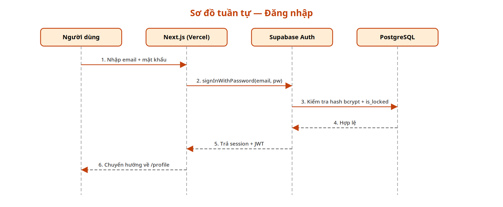
Hình . Sơ đồ tuần tự chức năng đăng nhập
Luồng tìm kiếm (Hình 3.3): từ khóa người dùng nhập được gửi đến máy chủ, ứng dụng gọi hàm search_recipes trong PostgreSQL – hàm này chuẩn hóa từ khóa (bỏ dấu, chữ thường), đối chiếu với tên, mô tả và nguyên liệu của các công thức đã xuất bản, sau đó trả về danh sách kết quả kèm điểm đánh giá trung bình để hiển thị.
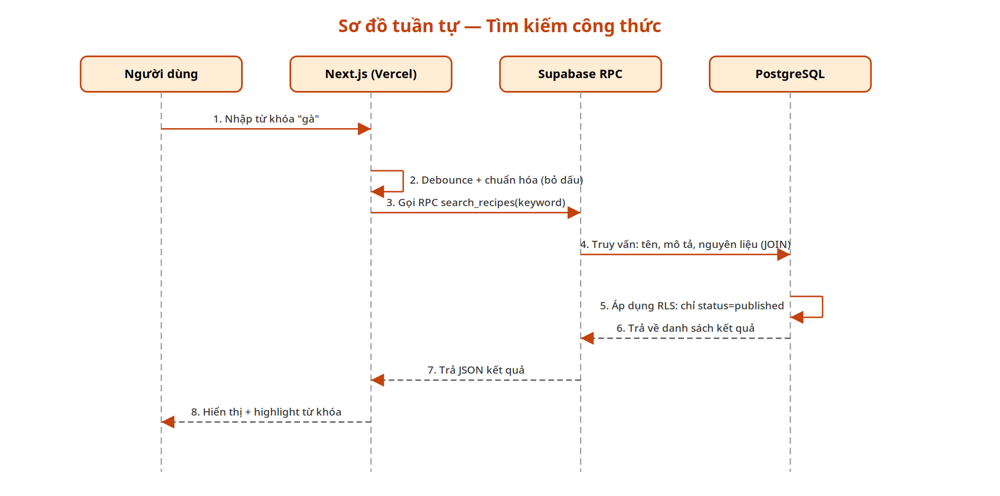
Hình . Sơ đồ tuần tự chức năng tìm kiếm
Luồng đánh giá công thức (Hình 3.4): thành viên chọn số sao, ứng dụng gọi Server Action để ghi nhận; ràng buộc duy nhất (user_id, recipe_id) ở cơ sở dữ liệu bảo đảm mỗi người dùng chỉ có một lượt đánh giá cho mỗi công thức, điểm đánh giá lại được ghi đè, giao diện được làm mới với điểm trung bình cập nhật.
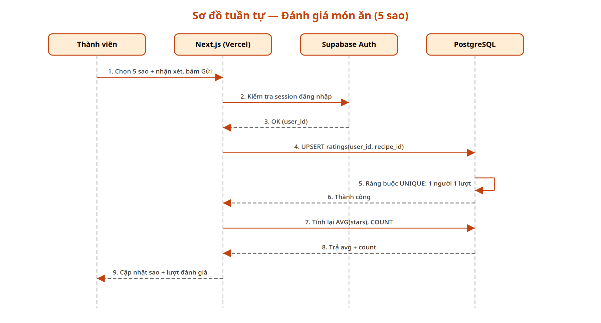
Hình . Sơ đồ tuần tự chức năng đánh giá công thức
Cơ sở dữ liệu được thiết kế theo mô hình quan hệ, gồm 11 bảng nghiệp vụ thuộc lược đồ public; thông tin tài khoản do Supabase Auth quản lý trong lược đồ riêng auth.users và được tham chiếu qua khóa ngoại user_id. Hình 3.5 thể hiện sơ đồ thực thể – quan hệ tổng quát của cơ sở dữ liệu.
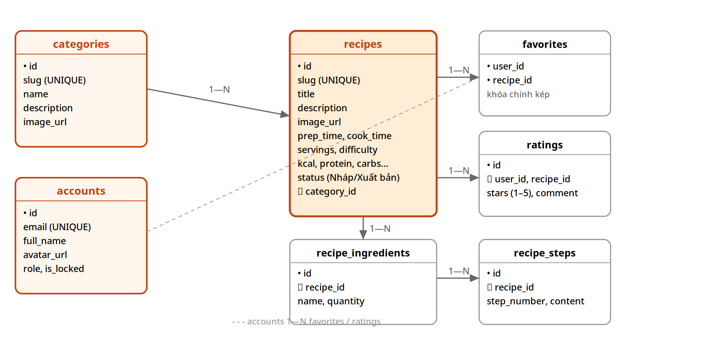
Hình . Sơ đồ thực thể – quan hệ (ERD) của cơ sở dữ liệu
Mô tả tóm tắt các bảng và ràng buộc quan trọng được liệt kê trong Bảng 3.2.
Bảng . Mô tả các bảng của cơ sở dữ liệu
Bảng | Vai trò | Ràng buộc chính |
|---|---|---|
categories | Danh mục món ăn | slug duy nhất; thuộc nhóm danh mục (dimension); khóa chính id |
recipes | Công thức nấu ăn | Khóa ngoại category_id; trạng thái published/draft; ghi nguồn (source_name, source_url); các chỉ số dinh dưỡng |
recipe_ingredients | Nguyên liệu của công thức | Khóa chính kép (recipe_id, position); xóa kèm công thức |
recipe_steps | Các bước thực hiện | Khóa chính kép (recipe_id, position); xóa kèm công thức |
favorites | Yêu thích | Khóa chính kép (user_id, recipe_id) – mỗi người một lượt lưu cho mỗi công thức |
ratings | Đánh giá sao 1–5 | UNIQUE (user_id, recipe_id); CHECK rating BETWEEN 1 AND 5 |
tags | Thẻ (tag) | slug duy nhất; gắn với công thức qua bảng trung gian recipe_tags |
recipe_questions | Hỏi đáp dưới công thức | Khóa ngoại recipe_id, user_id; quản trị viên trả lời (answer) |
banners | Banner trang chủ | Thứ tự hiển thị (sort_order); bật/tắt (is_active) |
tips | Bài viết mẹo vặt | slug duy nhất; trạng thái xuất bản (is_published) |
Một số quyết định thiết kế đáng chú ý: nguyên liệu và các bước được tách thành bảng riêng (thay vì lưu chuỗi văn bản dài) để tìm kiếm theo nguyên liệu (FR3) chính xác bằng phép nối bảng; ràng buộc UNIQUE trên ratings và khóa chính kép trên favorites bảo đảm quy tắc “một người dùng – một lượt thao tác” cho mỗi công thức; các bảng chi tiết dùng ON DELETE CASCADE để dữ liệu con tự động được dọn sạch khi xóa công thức.
Row Level Security (RLS) được bật trên mọi bảng nghiệp vụ: mỗi truy vấn của người dùng đều được PostgreSQL kiểm tra theo chính sách trước khi trả kết quả, vì vậy dù ứng dụng có sai sót thì dữ liệu vẫn được bảo vệ ở tầng thấp nhất. Bảng 3.3 liệt kê các chính sách tiêu biểu.
Bảng . Một số chính sách Row Level Security tiêu biểu
Bảng | Thao tác | Chính sách |
|---|---|---|
recipes, categories, tags | SELECT | Công khai (using (true)); ứng dụng chỉ hiển thị công thức đã xuất bản (published) |
recipes, categories, recipe_ingredients, recipe_steps | INSERT / UPDATE / DELETE | Chỉ quản trị viên – kiểm tra qua hàm is_admin() ngay trong cơ sở dữ liệu |
favorites | SELECT / INSERT / DELETE | Chỉ chủ nhân bản ghi (user_id = auth.uid()) hoặc quản trị viên |
ratings | SELECT | Công khai |
ratings | INSERT / UPDATE | Chỉ chính chủ (user_id = auth.uid()) hoặc quản trị viên |
recipe_questions | SELECT | Công khai |
recipe_questions | INSERT | Thành viên đã đăng nhập, trùng user_id của chính mình |
recipe_questions | UPDATE (trả lời) | Ứng dụng kiểm tra vai trò quản trị rồi ghi bằng client service-role |
tips | SELECT | Chỉ bản ghi đã xuất bản (is_published = true) |
Hệ thống tổ chức theo mô hình ba lớp trên một nền tảng Next.js duy nhất, như mô tả ở Hình 3.6:
• Tầng giao diện: Next.js App Router với ba nhóm tuyến — nhóm công khai (marketing) gồm trang chủ, danh mục, chi tiết công thức, tìm kiếm, mẹo vặt; nhóm quản trị (admin); nhóm xác thực (auth). Thành phần giao diện dùng Tailwind CSS v4 và shadcn/ui.
• Tầng xử lý: Server Actions xử lý các thao tác ghi (yêu thích, đánh giá, hỏi đáp, CRUD quản trị); các hàm dịch vụ trong thư mục lib/recipes tách bạch truy vấn dữ liệu khỏi giao diện; các hàm tiện ích kiểm tra phiên đăng nhập và vai trò quản trị trước mỗi thao tác.
• Tầng dữ liệu: Supabase Client (@supabase/ssr) truy vấn PostgreSQL qua PostgREST; hàm search_recipes trong CSDL đảm nhiệm tìm kiếm; chính sách RLS là lớp bảo vệ cuối cùng.
• Lưu trữ tệp: Supabase Storage (bucket recipe-images) chứa ảnh công thức, ảnh danh mục và banner.
• Triển khai: Vercel (build và phục vụ ứng dụng) kết hợp Supabase Cloud (cơ sở dữ liệu, xác thực, storage).

Hình . Sơ đồ khối kiến trúc hệ thống
Các công nghệ chính được lựa chọn và vai trò của chúng trong đề tài được tổng hợp tại Bảng 3.4.
Bảng . Môi trường và công cụ sử dụng
Thành phần | Công cụ / Công nghệ | Vai trò |
|---|---|---|
Framework | Next.js 16 (App Router) + TypeScript | Ứng dụng web full-stack, render phía máy chủ |
Giao diện | Tailwind CSS v4 + shadcn/ui | Hệ thống thiết kế, thành phần UI mobile-first |
Cơ sở dữ liệu | PostgreSQL (Supabase) | Lưu trữ, RLS, hàm tìm kiếm search_recipes |
Xác thực | Supabase Auth | Đăng ký/đăng nhập, phiên cookie, băm mật khẩu |
Lưu trữ tệp | Supabase Storage | Ảnh công thức, ảnh danh mục, banner |
Quản lý mã nguồn | Git + GitHub | Lịch sử commit, Pull Request, báo cáo tiến độ |
Môi trường phát triển | Node.js 24 LTS, VS Code | Chạy máy chủ phát triển và xây dựng |
Kiểm thử | Vitest | Kiểm thử đơn vị các hàm dịch vụ |
Triển khai | Vercel | Deploy tự động, tên miền và SSL |
Mã nguồn tổ chức theo mô hình monorepo (pnpm workspace + Turborepo): ứng dụng web nằm tại src/apps/web; các gói dùng chung @kit/* (khách Supabase, thành phần UI, tiện ích) nằm tại src/packages; toàn bộ cấu hình Supabase CLI, các tệp migration SQL và dữ liệu seed nằm tại thư mục supabase ở gốc kho mã nguồn. Bên trong ứng dụng: app/(marketing) chứa các trang công khai, app/admin chứa trang quản trị, app/auth chứa các trang xác thực; lib/recipes là lớp dịch vụ — queries.ts đọc dữ liệu, các tệp favorite-actions.ts, rating-actions.ts, social-actions.ts là Server Actions ghi dữ liệu — mỗi tệp đi kèm tệp kiểm thử đơn vị tương ứng; components/recipes chứa các thành phần giao diện dùng chung.
Lược đồ cơ sở dữ liệu được quản lý bằng 23 tệp migration SQL (Supabase CLI tự áp dụng theo thứ tự thời gian trong tên tệp), bộ dữ liệu mẫu gồm 37 công thức Việt Nam (kèm ảnh thật, nguyên liệu, các bước và giá trị dinh dưỡng) và 2 tài khoản demo.
• Tìm kiếm bỏ dấu tiếng Việt (FR3): hàm search_recipes viết bằng SQL trong PostgreSQL, dùng tiện ích unaccent để chuẩn hóa cả từ khóa và dữ liệu, tìm trên tên, mô tả và nguyên liệu; hỗ trợ lọc theo danh mục và sắp xếp. Trang /tim-kiem gọi hàm này qua cơ chế RPC của Supabase.
• Yêu thích và đánh giá (FR5, FR6): các Server Actions gọi insert/delete trên bảng favorites, ratings rồi làm mới dữ liệu của trang bằng revalidatePath; ràng buộc UNIQUE phía CSDL chặn thao tác trùng; giao diện cập nhật trạng thái tức thời.
• Tải ảnh lên (FR7): ảnh được kiểm tra định dạng và kích thước trước khi tải vào bucket recipe-images của Supabase Storage; đường dẫn công khai được ghi vào cột image_url.
• Phân quyền quản trị (FR7): trước mỗi thao tác quản trị, ứng dụng kiểm tra phiên đăng nhập và vai trò (các hàm require-admin); đối với dữ liệu quản trị như công thức, danh mục, chính sách RLS cũng kiểm tra vai trò phía cơ sở dữ liệu nên được bảo vệ hai tầng; riêng thao tác trả lời hỏi đáp được ghi qua client service-role sau khi ứng dụng đã xác nhận vai trò quản trị.
• Hiệu năng: các trang công khai dùng Server Components — dữ liệu được truy vấn và hiển thị phía máy chủ, chỉ phần tương tác (tìm kiếm, yêu thích, đánh giá) chạy JavaScript trên trình duyệt; dữ liệu được truy vấn theo từng trang giúp giảm khối lượng truyền về máy khách.
Các hàm dịch vụ được kiểm thử đơn vị bằng Vitest (pnpm test), bao phủ nhóm chức năng yêu thích, đánh giá, sinh slug, xử lý ảnh và các truy vấn đọc dữ liệu. Ngoài kiểm thử đơn vị, các luồng chính (đăng ký – đăng nhập, tìm kiếm có dấu và không dấu, yêu thích, đánh giá, hỏi đáp, toàn bộ màn hình quản trị) được kiểm thử thủ công trên trình duyệt ở cả kích thước desktop và độ rộng 375px để xác nhận giao diện hiển thị tốt trên thiết bị di động.
Chương này trình bày kết quả đạt được của đồ án: mức độ hoàn thành chức năng so với đặc tả, môi trường triển khai, các giao diện chức năng tiêu biểu của website và nhận định đánh giá chung.
Trong quá trình phát triển, ứng dụng chạy trên máy cá nhân (Windows) với Node.js 24 LTS và Supabase chạy cục bộ qua Docker; máy chủ phát triển khởi động bằng lệnh pnpm dev và truy cập qua trình duyệt ở địa chỉ localhost. Sản phẩm cuối được triển khai lên nền tảng Vercel, sử dụng Supabase Cloud cho cơ sở dữ liệu, xác thực và lưu trữ ảnh; mỗi lần đẩy mã nguồn lên GitHub, Vercel tự động xây dựng và triển khai phiên bản mới. Bản demo của đồ án được công bố tại địa chỉ https://congthucmonngon.vercel.app; toàn bộ mã nguồn được quản lý công khai tại kho GitHub https://github.com/anhpt220203-web/csn-dx23tt11-phamtuananh-recipe-sharing.
Kết quả cài đặt so với danh mục chức năng ở Bảng 3.1 được tổng hợp trong Bảng 4.1.
Bảng . Mức độ hoàn thành chức năng
Mã | Chức năng | Kết quả | Ghi chú |
|---|---|---|---|
FR1 | Hiển thị công thức theo danh mục | Hoàn thành | Trang chủ, /danh-muc, /danh-muc/[slug] |
FR2 | Trang chi tiết công thức | Hoàn thành | /cong-thuc/[slug] |
FR3 | Tìm kiếm công thức | Hoàn thành | Tìm được cả từ khóa có dấu và không dấu |
FR4 | Tài khoản người dùng | Hoàn thành | Đăng ký, đăng nhập, khôi phục mật khẩu |
FR5 | Yêu thích | Hoàn thành | Trang /yeu-thich |
FR6 | Đánh giá sao | Hoàn thành | Điểm trung bình hiển thị ở danh sách và chi tiết |
FR7 | Trang quản trị | Hoàn thành | Công thức, danh mục, đánh giá, hỏi đáp, mẹo vặt, media, người dùng |
FR8 | Mẹo vặt nấu ăn | Hoàn thành | /meo-vat |
FR9 | Hỏi và đáp | Hoàn thành | Đặt câu hỏi và trả lời tại trang chi tiết công thức |
FR10 | Banner và thẻ | Hoàn thành | Banner trang chủ; trang /tag/[slug] |
Phần dưới đây trình bày các giao diện chức năng tiêu biểu của website; ảnh chụp được thực hiện trên phiên bản triển khai tại địa chỉ https://congthucmonngon.vercel.app ở kích thước màn hình desktop (1440px) và thiết bị di động (375px).
Trang chủ hiển thị banner giới thiệu, các nhóm danh mục món ăn, danh sách công thức mới và các món được đánh giá cao.
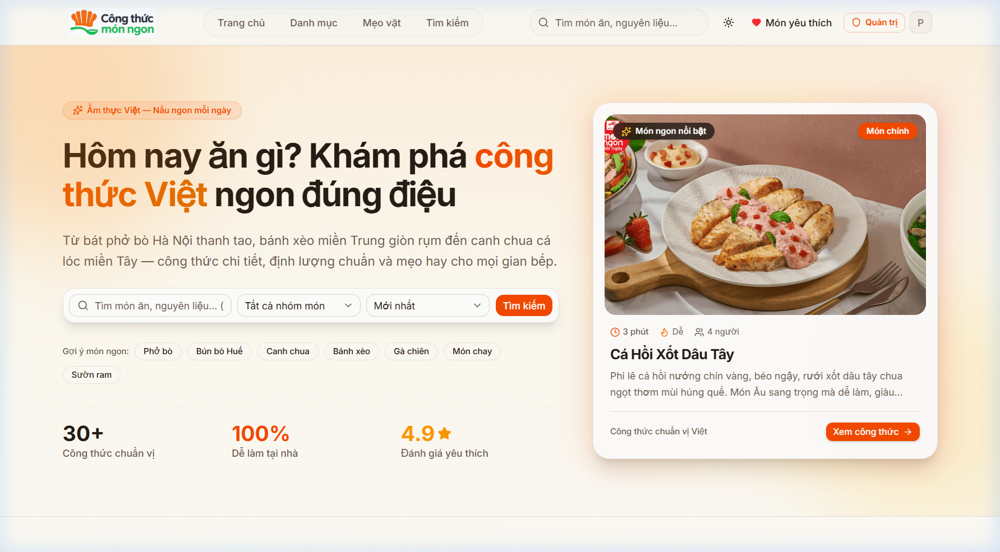
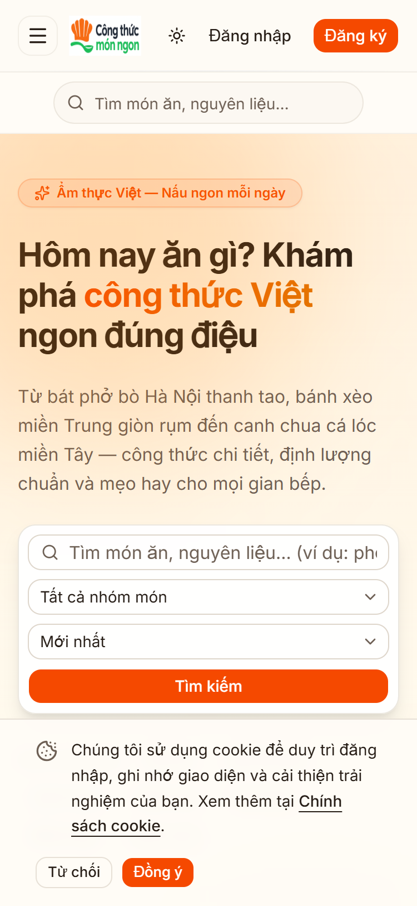
Hình . Giao diện trang chủ (desktop và mobile 375px)
Trang /danh-muc liệt kê các nhóm danh mục; trang danh mục chi tiết (/danh-muc/[slug]) hiển thị lưới công thức thuộc nhóm kèm phân trang.
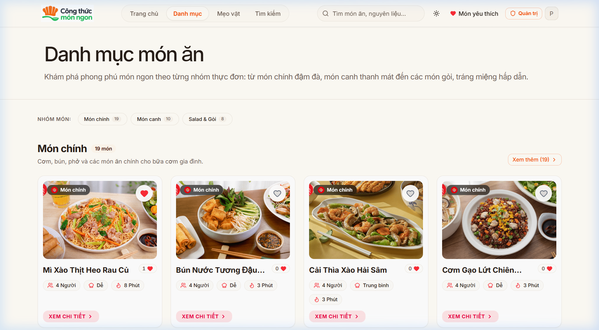
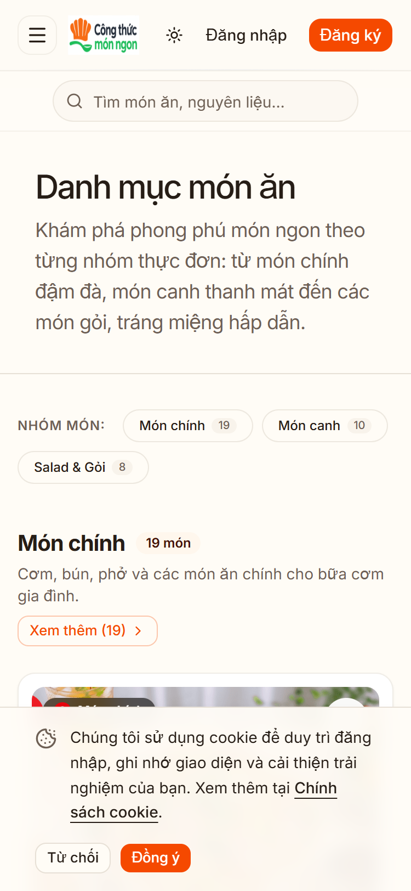
Hình . Giao diện trang danh mục
Trang chi tiết hiển thị ảnh, mô tả, thời gian, độ khó, khẩu phần, danh sách nguyên liệu dạng checklist, các bước thực hiện, điểm đánh giá và phần hỏi đáp.

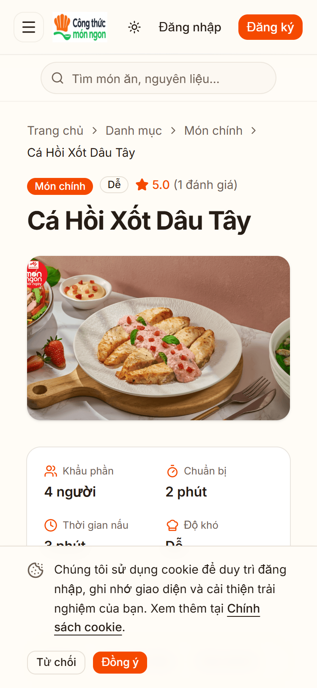
Hình . Giao diện trang chi tiết công thức
Trang /tim-kiem hiển thị kết quả tìm kiếm theo từ khóa (đã bỏ dấu tự động), kèm bộ lọc danh mục và tùy chọn sắp xếp.
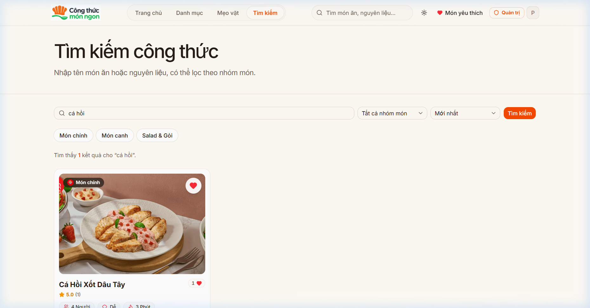
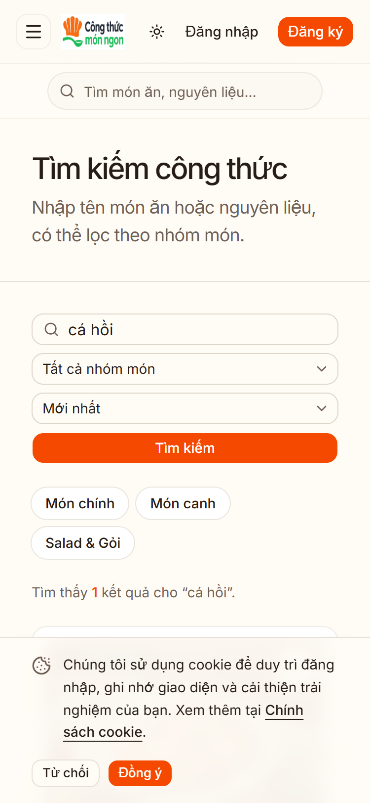
Hình . Giao diện trang tìm kiếm
Thành viên lưu công thức vào trang /yeu-thich và chấm điểm ngay tại trang chi tiết; trạng thái yêu thích/đánh giá cập nhật tức thời.
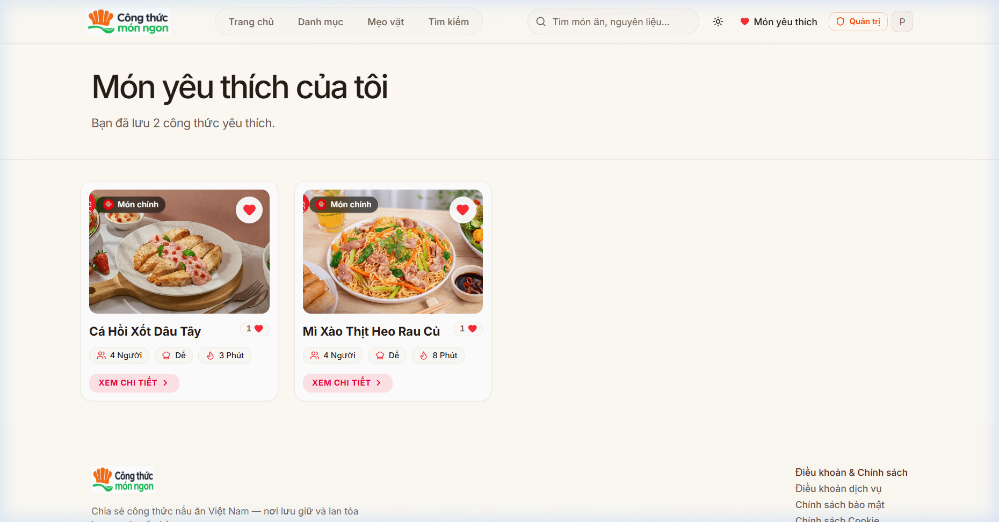 | 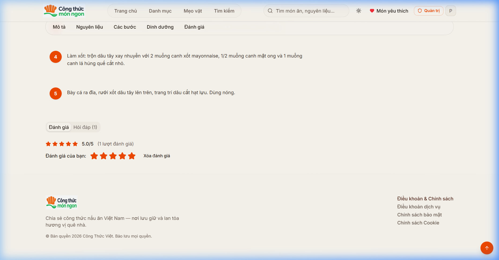 |
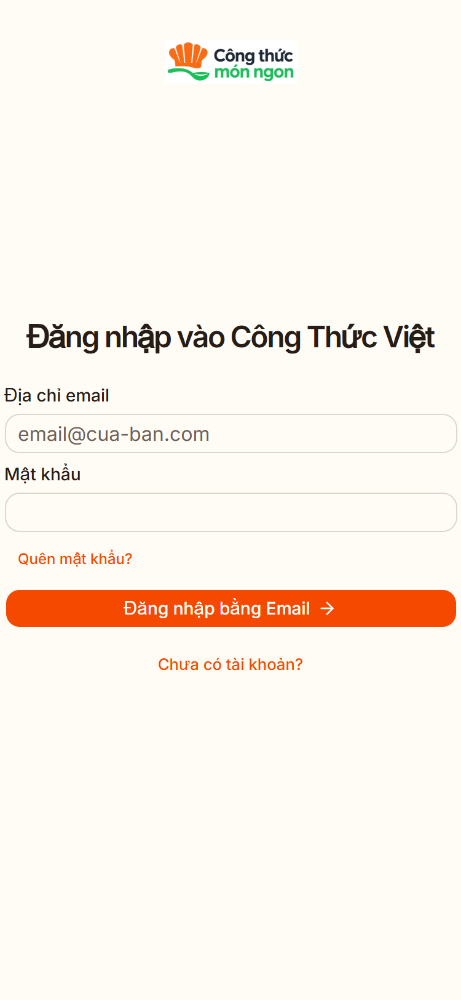
Hình . Giao diện trang yêu thích và đánh giá sao
Các trang /auth/sign-in và /auth/sign-up cho phép đăng nhập, đăng ký bằng email/mật khẩu; có chức năng khôi phục mật khẩu qua email.
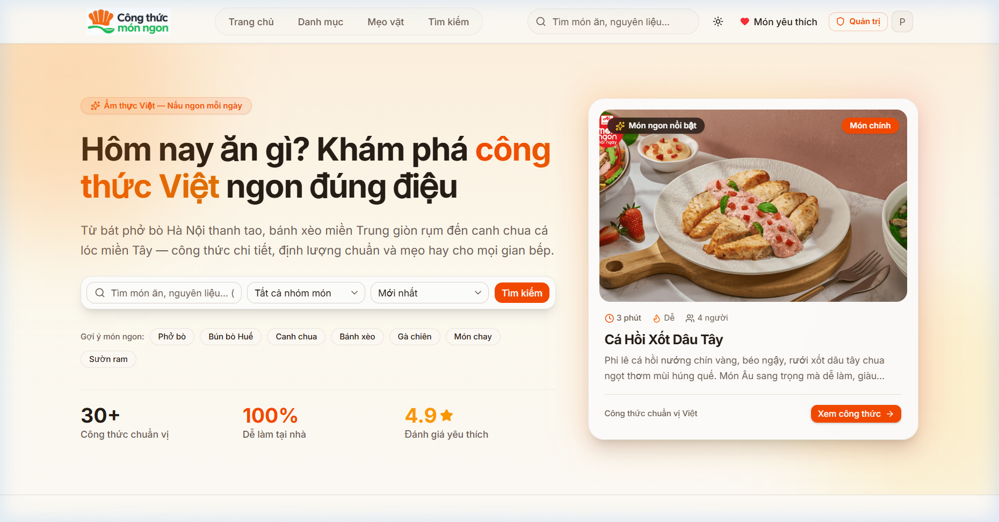 |

Hình . Giao diện đăng nhập và đăng ký
Khu vực /admin gồm bảng điều khiển thống kê và các màn hình quản lý công thức, danh mục, đánh giá, hỏi đáp, mẹo vặt, media và người dùng.
| 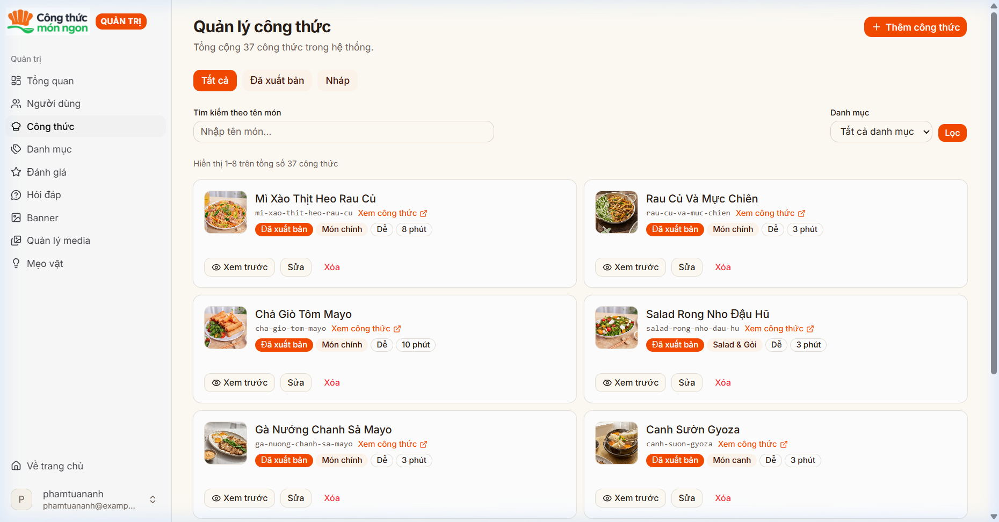 |
| 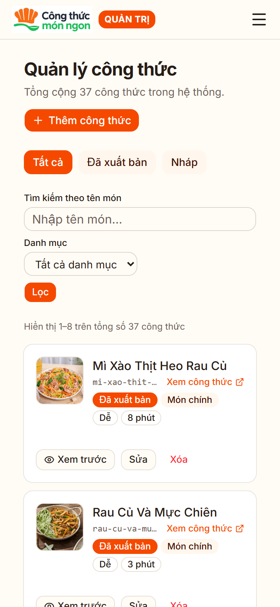 |
Hình . Giao diện trang quản trị
Bộ kiểm thử đơn vị chạy bằng lệnh pnpm test (Vitest) đạt pass toàn bộ, bao phủ các hàm dịch vụ yêu thích, đánh giá, sinh slug, xử lý ảnh và truy vấn dữ liệu. Kiểm thử thủ công trên trình duyệt xác nhận: tìm kiếm trả kết quả đúng cho cả từ khóa có dấu và không dấu; các thao tác yêu thích/đánh giá phản ánh đúng trạng thái sau khi làm mới trang; toàn bộ trang hiển thị tốt ở độ rộng 375px; các thao tác ghi của vai trò không đủ quyền bị từ chối ở cả tầng ứng dụng lẫn tầng cơ sở dữ liệu.
Ưu điểm của sản phẩm đạt được:
• Hoàn thành đầy đủ 7 nhóm chức năng cốt lõi và 3 nhóm chức năng bổ sung theo đặc tả.
• Bảo mật được kiểm soát đồng thời ở tầng ứng dụng và tầng cơ sở dữ liệu (RLS), mật khẩu do Supabase Auth băm và quản lý.
• Bộ dữ liệu mẫu 37 công thức Việt Nam có ảnh thật, nguyên liệu, các bước và giá trị dinh dưỡng, sẵn sàng cho trình diễn.
• Giao diện tiếng Việt hoàn toàn, mobile-first, hiển thị tốt từ 375px.
• Triển khai tự động trên Vercel kèm tên miền và HTTPS, dễ trình diễn và chia sẻ liên kết demo.
Bên cạnh đó, sản phẩm còn một số hạn chế:
• Thành viên chưa thể tự đăng công thức mới (chỉ quản trị viên đăng).
• Chưa có hệ thống bình luận thảo luận trực tiếp dưới công thức.
• Tìm kiếm dạng đối chiếu chuỗi đơn giản, chưa xếp hạng theo mức độ khớp.
• Băng thông và dung lượng phụ thuộc hạn mức miễn phí của Supabase và Vercel.
Đồ án đã hoàn thành mục tiêu đề ra của học phần Thực tập đồ án cơ sở ngành: xây dựng thành công website quản lý và chia sẻ công thức nấu ăn “Công Thức Việt” với đầy đủ 10 nhóm chức năng (7 nhóm cốt lõi và 3 nhóm bổ sung), bộ dữ liệu mẫu hơn 30 công thức Việt Nam có ảnh minh họa, giao diện tiếng Việt hoàn toàn hiển thị tốt trên thiết bị di động, và cơ chế bảo mật phân quyền kiểm soát ở cả tầng ứng dụng lẫn tầng cơ sở dữ liệu.
Qua đồ án, em đã vận dụng tổng hợp các kiến thức chuyên ngành vào một sản phẩm thực tế: thiết kế cơ sở dữ liệu quan hệ và chuẩn hóa dữ liệu; kiến trúc ứng dụng web ba lớp với Next.js full-stack; xác thực và phân quyền người dùng với Supabase Auth; viết kiểm thử đơn vị; đồng thời hình thành thói quen làm việc chuyên nghiệp với Git/GitHub — commit thường xuyên, báo cáo tiến độ hằng tuần và hợp nhất mã nguồn qua Pull Request.
Sản phẩm đáp ứng tốt nhu cầu tìm kiếm, lưu trữ và chia sẻ công thức nấu ăn Việt Nam; đồng thời là nền tảng sẵn sàng cho các hướng mở rộng trong tương lai.
Trong thời gian tới, hệ thống có thể được mở rộng theo các hướng sau:
• Cho phép thành viên đăng công thức của riêng mình, kèm luồng duyệt nội dung của quản trị viên.
• Bổ sung hệ thống bình luận thảo luận dưới mỗi công thức.
• Chia sẻ công thức lên mạng xã hội (Facebook, Zalo) và nhúng công thức ra bên ngoài.
• Xây dựng ứng dụng PWA hoặc ứng dụng di động dùng lại cùng cơ sở dữ liệu.
• Gợi ý món ăn theo nguyên liệu sẵn có trong nhà, ứng dụng trí tuệ nhân tạo.
• Đa ngôn ngữ (tiếng Việt – tiếng Anh) và thống kê nâng cao cho quản trị viên.
Để chạy lại chương trình trên máy khác, thực hiện lần lượt các bước sau:
(1) Cài đặt Node.js 24 LTS và trình quản lý gói pnpm.
(2) Sao chép kho mã nguồn về máy: git clone https://github.com/anhpt220203-web/csn-dx23tt11-phamtuananh-recipe-sharing, vào thư mục src và chạy lệnh pnpm install để cài các thư viện.
(3) Sao chép tệp .env.example thành .env.local trong src/apps/web và khai báo các biến môi trường của dự án Supabase (NEXT_PUBLIC_SUPABASE_URL, NEXT_PUBLIC_SUPABASE_ANON_KEY, SUPABASE_SERVICE_ROLE_KEY).
(4) Tạo cơ sở dữ liệu mẫu: chạy Supabase cục bộ (cần Docker) rồi pnpm --filter web supabase:reset để áp dụng 23 tệp migration; sau đó nạp lần lượt các tệp trong supabase/seed theo thứ tự 01_demo_recipe.sql, 02_demo_users.sql, 02_recipes_batch1.sql, 03_recipes_batch2.sql (công thức mẫu, tài khoản demo).
(5) Khởi động máy chủ phát triển bằng lệnh pnpm dev và truy cập website qua trình duyệt ở địa chỉ localhost.
(6) Triển khai thật: liên kết dự án Supabase Cloud (supabase link rồi supabase db push) và nhập kho mã nguồn vào Vercel để tự động triển khai.
Hệ thống kèm theo các tài khoản dùng thử (mật khẩu chung: Demo@123456):
Bảng Ph.1 Tài khoản dữ liệu mẫu của hệ thống
Vai trò | Tài khoản (email) | Quyền hạn |
|---|---|---|
Quản trị viên | phamtuananh@example.com | Toàn bộ chức năng thành viên + trang quản trị |
Thành viên | member@example.com | Xem, tìm kiếm, yêu thích, đánh giá, hỏi đáp |